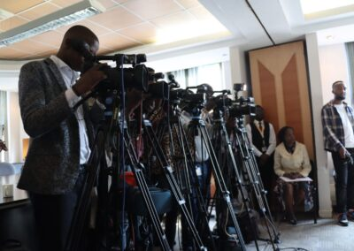

Kenya National Commission on Human Rights: Lest We Forget

Kenya National Commission on Human Rights: Lest We Forget
The Kenya National Commission on Human Rights (KNCHR) has released a statement condemning the recent cases of unwarranted violence and human rights violations that Kenyans are being subjected to during ongoing demonstrations. The statement emphasizes the need for upholding the Constitution of Kenya and calls upon all stakeholders to ensure peaceful and unarmed demonstrations. The following are the key headings discussed in the KNCHR's statement:
Right to Assembly, Demonstration, Picketing, and Petition
photo credit; https://barakafm.org/2023/03/21/azimio-maandamano-to-be-held-on-mondays-and-thursdays/
The right to assembly, demonstration, picketing, and petition is secured under Article 37 of the Constitution of Kenya. However, the KNCHR notes with concern the disruption of peace and the presence of demonstrators armed with crude weapons in Migori, Kisumu, and Nairobi. The KNCHR calls upon the government to uphold and respect the provisions of Article 37 and urges the Azimio movement to ensure that their demonstrations are peaceful and unarmed.
Right to Life
Article 26 of the Constitution guarantees the right to life, and the KNCHR has documented the shooting and killing of three persons allegedly by the police in Kisumu County. The KNCHR calls upon the police to ensure security and protection of all persons during demonstrations and to restrain from using live bullets. The police and IPOA are also urged to conduct thorough investigations into the killings and bring the perpetrators to justice.
Freedom and Security of the Person
The right to freedom and security of the person, which includes the right not to be subjected to any form of violence from either public or private sources, is enshrined in Article 29 of the Constitution. The KNCHR continues to document serious breaches of this right in Mathare Valley, Kibra, Embakasi, Jakaranda, Kawangare, Migori, and Kisumu. The commission calls upon citizens to respect this right and refrain from causing harm and injury to other citizens, media personnel, and the police. The police are also urged to conduct investigations, arrest and ensure prosecution of perpetrators, and observe the provisions of the Public Order Management Guidelines.
Freedom of the Media
Article 34 guarantees press freedom, and the media practitioners must equally enjoy their rights to life, security, dignity, and privacy. However, the KNCHR notes incidents of knife-wielding gangs in Kibra attacking journalists from local and international news outlets, and of a rowdy gang within Kibra’s DOs area injuring several others. The commission also has reports of journalists that were forced by security officers to delete images captured during the demonstrations while others were arbitrarily arrested. The KNCHR calls on the security officers to provide security and protection to journalists covering the demonstrations in line with the Constitution.
Freedom of Conscience, Religion, Belief, and Opinion
The right of every person to manifest any religion or belief and to express and propagate their opinions and ideas is enshrined in Article 32 of the Constitution. The KNCHR calls for tolerance, respect, and understanding among all Kenyans, regardless of their political affiliation or belief. It is crucial to ensure that freedom of expression and opinion is upheld, while avoiding hate speech, incitement, and negative ethnicity.
In conclusion, the KNCHR emphasizes that the fundamental rights, freedoms, and democratic principles enshrined in the Constitution of Kenya are now at stake, and it is crucial to avoid slipping into the path of disorder and lawlessness. All stakeholders, including the government, opposition, police, media, and citizens, are called upon to respect, uphold, and defend the Constitution, lest we forget the dark and painful past of our country.